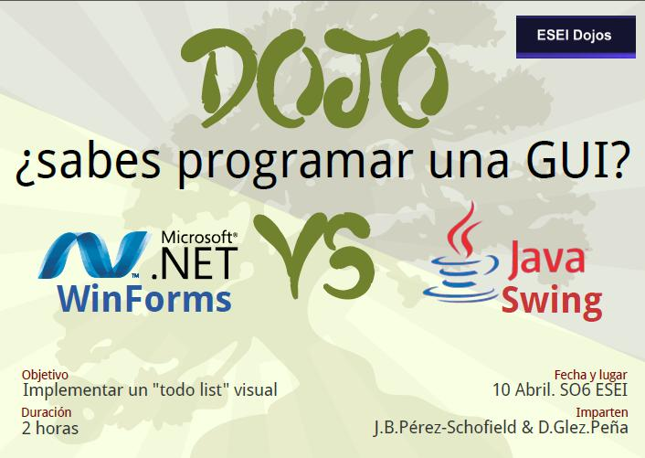
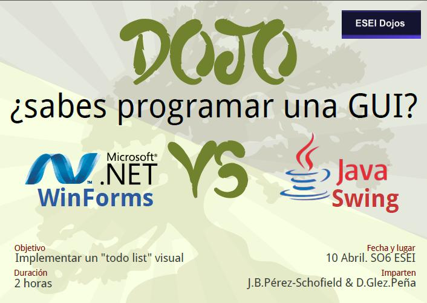

Contenido
Charla en los ESEI Dojos sobre programación con C# en WinForms sobre mono, con MonoDevelop. Esta charla fue
impartida con Daniel González Peña, quien realizó una comparativa con Java SWING.
Cartel del ESEI Dojo sobre GUI's

Charla en los ESEI Dojos sobre programación con C# en WinForms sobre mono, con MonoDevelop. Esta charla fue
impartida con Daniel González Peña, quien realizó una comparativa con Java SWING.
Cartel del ESEI Dojo sobre GUI's
